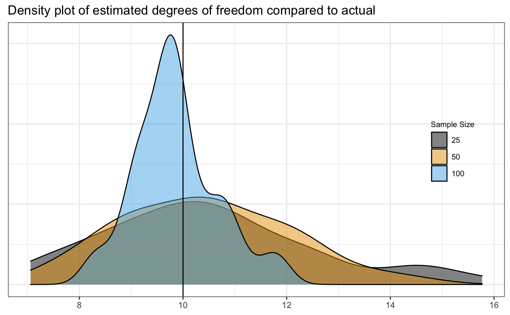

vignettes/matrix-t-estimation.Rmd
matrix-t-estimation.RmdThe parameters of the multivariate t distribution can be estimated using the EM algorithm. An EM algorithm for the multivariate \(t\)-distribution with no missing data was provided by Rubin (1983). This was variously extended and refined, as the EM algorithm can be quite slow to converge. One set of refinements split the M-step into a series of conditional maximization (CM) steps (Meng and Rubin 1993), and then a later refinement (called ECME) allowed for either conditional maximization steps or maximizing the constrained actual likelihood (Liu and Rubin 1994), which leads to dramatically faster convergence. The matrix variate \(t\) is an extension of the multivariate version (Dickey 1967), however, unlike the normal distribution, it cannot be treated as a rearrangement of the multivariate case, so the addition of the extra dimension poses a non-trivial problem for extending the results.
An \(n \times p\) random matrix \(\mathbf{X}\) is distributed as a matrix variate \(t\) random variable if it has probability density function as follows: \[f({\mathbf {X}};\nu,{\mathbf {M}}, {\boldsymbol \Omega }, {\boldsymbol \Sigma }) = {\frac {\Gamma _{p}\left({\frac {\nu +n+p-1}{2}}\right)}{(\pi )^{{\frac {np}{2}}}\Gamma _{p}\left({\frac {\nu +p-1}{2}}\right)}}|{\boldsymbol \Omega }|^{{-{\frac {n}{2}}}}|{\boldsymbol \Sigma }|^{{-{\frac {p}{2}}}}\times \left|{\mathbf {I}}_{n}+{\boldsymbol \Sigma }^{{-1}}({\mathbf {X}}-{\mathbf {M}}){\boldsymbol \Omega }^{{-1}}({\mathbf {X}}-{\mathbf {M}})^{{{\rm {T}}}}\right|^{{-{\frac {\nu +n+p-1}{2}}}}\]
With \(\Omega\) and \(\Sigma\) covariance matrices of appropriate dimension, \(\mathbf{M}\) a mean matrix, \(\nu\) the degrees of freedom parameter, and \(\Gamma_p()\) the multivariate gamma function, which is implemented in the CholWishart package available on CRAN.
For \(p = 1\) and \(\Sigma = \nu\) (or \(q = 1\) and \(\Omega = \nu\)), this reduces to the familiar multivariate \(t\) distribution. If the \(p \times q\) dimensional random variable \(X\) follows the matrix variate \(t\) distribution \(t(\nu, M, \Sigma, \Omega)\) with center \(M\), positive definite spread matrices \(\Sigma\) (\(p \times p\)) and \(\Omega\) (\(q \times q\)), and degrees of freedom \(\nu\), it can be shown that, given a certain weight matrix \(S\), \(X\) has a matrix variate normal distribution and that \(S\) is Wishart-distributed. Specifically, \[\begin{align*} X | M, \Sigma, \Omega, \nu, S & \sim N(M, S^{-1} \otimes \Omega) \\ S|M, \Omega, \Sigma, \nu & \sim W_p(\nu + p -1, \Sigma^{-1}) \end{align*}\] Additionally, it can be shown the Wishart is the conjugate prior distribution for the parameter \(\Sigma\), and thus the conditional posterior distribution of \(S\), i.e., its distribution given \((M, \Omega, \Sigma, \nu, X)\) is \[S | X, M, \Omega, \Sigma, \nu \sim \mathrm{W}_p(\nu+p+q-1, [(X-M)\Omega^{-1}(X-M)^T + \Sigma]^{-1}) \]
For an observed set of \(X_i\), \(i = 1, 2, \ldots, N\), then, we can construct an ECM-style algorithm by augmenting our data with a set of weights, \(S_i\), and use this to estimate the parameters of the matrix variate \(t\) distribution. Briefly, we define a set of complete data sufficient statistics based on the \(S_i\) and update them with their expectations in the E-step. Then, the other parameters are maximized in the CM steps.
The complete data sufficient statistics for the quantities to be estimated are: \[S_{SX} =\sum_{i = 1}^N S_i X_i; \quad S_S = \sum_{i = 1}^N S_i; \quad S_{XSX} = \sum_{i = 1}^N X_i^T S_i X_i \quad S_{|S|} = \sum_{i = 1}^N \log |Si|\]
Define at step \(t\) the set \(\Theta^{(t)} = (X_{obs},\nu^{(t)}, M^{(t)}, \Sigma^{(t)}, \Omega^{(t)})\). Then, given these values, we have, based on the properties of the Wishart distribution, \[S_{i}^{(t+1)} = E(S_i | \Theta^{(t)}) = (\nu^{(t)}+p+q-1)[(X_i-M^{(t)})\Omega^{(t)^{-1 }}(X_i-M^{(t)})^T + \Sigma^{(t)}]^{-1} \] From this we can derive the other expected values: \[ \begin{align*} S_{S}^{(t+1)} &= E(S_S | \Theta^{(t)}) = \sum_{i=1}^N S_{i}^{(t+1)} \\ S_{SX}^{(t+1)} &= E(S_{SX} | \Theta^{(t)}) = \sum_{i=1}^NE(S_iX_i|\Theta^{(t)}) = \sum_{i=1}^N S_{i}^{(t+1)}X_i \\ S_{XSX}^{(t+1)} &= E(S_{XSX} | \Theta^{(t)}) = \sum_{i=1}^NE(X_i^TS_iX_i|\Theta^{(t)}) = \sum_{i=1}^N X_i^TS_{i}^{(t+1)}X_i \end{align*} \] This last value only needs to be computed if \(\nu\) is unknown: \[ \begin{align*} S_{|S|}^{(t+1)} &= E(S_{|S|} | \Theta^{(t)}) = E \left[\sum_{i = 1}^N \log| S_i| \big| \Theta^{(t)} \right]\\ &=N\psi_{p}\left({\frac {\nu^{(t)} + p + q -1}{2}}\right) + Np \log 2 +\sum_{i=1}^N \log \left|\frac{S_{i,obs}^{(t+1)}}{\nu^{(t)} + p + q -1}\right| \end{align*} \]
Similarly to the case of the multivariate \(t\), it is more efficient to partition the maximization step into multiple steps. This is an ECME algorithm that first maximizes the expected log-likelihood for \((M, \Sigma, \Omega)\) and then maximizes the actual log-likelihood over \(\nu\) given \((M, \Sigma, \Omega)\), similar to .
Based on the updated weight matrices \(S_i^{(t+1)}\) and statistics based on \(\Theta^{(t)}\) and \(X_{obs}\),
\[ \begin{align*} \widehat{M} &= \left(\sum_{i = 1}^NS_i^{(t+1)}\right)^{-1}\sum_{i=1}^NS_iX_i = {S_{S}^{(t+1)}}^{-1} S_{SX}^{(t+1)} \\ \widehat{\Omega} &= \frac{1}{Np} \sum_{i = 1}^N (X_i - {M}^{(t)})^T S_i^{(t+1)} (X_i - {M}^{(t)}) =\frac{1}{Np} \left(S_{XSX}^{(t+1)} - {S_{SX}^{(t+1)}}^T {S_{S}^{(t+1)}}^{-1}{S_{SX}^{(t+1)}} \right) \\ \widehat{\Sigma}^{-1} &= \frac{1}{N(\nu^{(t)}+p-1)}\sum_{i = 1}^N S_i^{(t+1)} = \frac{S_S^{(t+1)}}{N(\nu^{(t)}+p-1)} \end{align*} \] And, again, with the set of \(S_i\) observed, the MLE of \(\nu\) can be obtained: \[ N \frac{d}{d\nu}\log \Gamma_p ((\nu+p-1)/2) - \frac{1}{2} (S_{|S|} - Np\log2 + N \log |\widehat{\Sigma}|) = 0\] Note that \(\nu > p -1\). Specifically, we have: \[ \begin{align*} 0 &= N \psi_p((\nu+p-1)/2) - \left(N\psi_{p}\left({\frac {\nu + p + q -1}{2}}\right) +\sum_{i=1}^N \log \left|\frac{S_{i,obs}^{(t+1)}}{\nu + p + q -1}\right| - N \log \left|\frac{S_S^{(t+1)}}{N(\nu+p-1)}\right|\right) \\* &= \psi_p((\nu+p-1)/2) - \left(\psi_{p}\left({\frac {\nu + p + q -1}{2}}\right) +\frac{1}{N}\sum_{i=1}^N \log \left|Z_{i,obs}^{(t+1)}\right| + p \log \frac{N(\nu + p -1)}{\nu + p +q -1} - \log \left|Z_S^{(t+1)}\right|\right) \end{align*}\] where \(Z_{*}\) is the appropriate \(S_{*}\) statistic with \((\nu + p + q -1)\) factored out and \(\psi_p\) is the \(p\)-dimensional digamma function. This can be solved for \(\nu\) using a 1-dimensional search.
If the degrees of freedom parameter, \(\nu\) known, the estimation is fairly straightforward. The procedure is similar to the multivariate \(t\) or the matrix variate normal. In this case, the interface is just like the interface for the MLmatrixnorm() function:
set.seed(20190622)
sigma = (1/7) * rWishart(1, 7, 1*diag(3:1))[,,1]
A = rmatrixt(n=100,mean=matrix(c(100,0,-100,0,25,-1000),nrow=2),
V = sigma, df = 7)
results=MLmatrixt(A, df = 7)
print(results)
#> $mean
#> [,1] [,2] [,3]
#> [1,] 99.8291911 -1.000708e+02 25.01042
#> [2,] -0.0425028 -8.261356e-03 -1000.02357
#>
#> $U
#> [,1] [,2]
#> [1,] 1.00000000 -0.08039981
#> [2,] -0.08039981 0.97069319
#>
#> $V
#> [,1] [,2] [,3]
#> [1,] 1.0000000 0.21375613 0.11094767
#> [2,] 0.2137561 0.14872070 0.04098332
#> [3,] 0.1109477 0.04098332 0.12860660
#>
#> $var
#> [1] 5.148569
#>
#> $nu
#> [1] 7
#>
#> $iter
#> [1] 44
#>
#> $tol
#> [1] 1.155396e-08
#>
#> $logLik
#> [1] -501.5074 -487.1170 -456.2536 -430.9883 -414.2034 -403.7505 -397.3392
#> [8] -393.3964 -390.9523 -389.4243 -388.4617 -387.8514 -387.4625 -387.2137
#> [15] -387.0538 -386.9509 -386.8845 -386.8416 -386.8138 -386.7958 -386.7841
#> [22] -386.7765 -386.7715 -386.7683 -386.7662 -386.7649 -386.7640 -386.7634
#> [29] -386.7630 -386.7628 -386.7626 -386.7625 -386.7625 -386.7624 -386.7624
#> [36] -386.7624 -386.7624 -386.7624 -386.7624 -386.7623 -386.7623 -386.7623
#> [43] -386.7623 -386.7623
#>
#> $convergence
#> [1] TRUE
#>
#> $call
#> MLmatrixt(data = A, df = 7)There are two restrictions possible for the mean matrices: row.mean = TRUE will force a common mean within a row and col.mean = TRUE will force a common mean within a column. Setting both will ensure a constant mean for the entire system. Restrictions on \(\mathbf{U}\) and \(\mathbf{V}\), the row-wise variance and column-wise variance, are possible with row.variance and col.variance commands.
The options for variance restrictions are the same as for the MLmatrixnorm() function. Currently the options for variance restrictions are to impose an AR(1) structure by providing the AR(1) option, a compound symmetry structure by providing the CS option, to impose a correlation matrix structure by specifying correlation or corr, or to impose an identical and independent structure by specifying Independent or I. This works by using uniroot to find the appropriate \(\rho\) which sets the derivative of the log-likelihood to zero for the AR and CS options - it is not fast but if this is the true structure it will be better in some sense than an unstructured variance matrix. The \(\rho\) parameter should be \(>0\) and is forced to be non-negative. If the data behaves incompatibly with those restrictions, the function will provide a warning and exit with the current model fit.
Estimation of \(\nu\), the degrees of freedom parameter, is slow and the principal mathematical difficulty of the matrix-variate \(t\) distribution. It is performed using ECME. Generally, a fair amount more data are needed in order to have good convergence properties for the estimator, but they have not been derived analytically. Here you can see the recovery of the parameter for a few sample sizes. Because of the relative slowness of running a longer simulation, this only includes one set of examples. I give code for a longer and larger simulation than what is plotted if you’re really interested below. What is plotted below is only the df = 10 example with 75 trials and a maximum number of iterations max.iter = 50. The full simulation may take several minutes.

| samplesize | min | max | median | mean | sd |
|---|---|---|---|---|---|
| 25 | 6.132647 | 18.44128 | 10.807538 | 11.19913 | 3.088932 |
| 50 | 6.466014 | 16.67994 | 11.006898 | 11.04982 | 2.455761 |
| 100 | 8.265923 | 13.37667 | 9.990114 | 10.17745 | 1.156677 |
As expected, increased sample size leads to better results in recovering the parameter. The results for smaller sample sizes would be more divergent if left to run until convergence.
Using the \(t\) distribution works in both matrixlda() and matrixqda() as expected by specifying method = "t" and providing either a single parameter (for lda or qda) for the degrees of freedom or a vector as long as the number of classes (for qda). Additional parameters for fitting can be passed through the ... to MLmatrixt() just as for the normal case, including estimating the degrees of freedom parameter. The qda will only estimate nu with it varying between groups, it will not estimate a common nu.
A <- rmatrixt(30, mean = matrix(0, nrow=2, ncol=3), df = 10)
B <- rmatrixt(30, mean = matrix(c(1,0), nrow=2, ncol=3), df = 10)
C <- rmatrixt(30, mean = matrix(c(0,1), nrow=2, ncol=3), df = 10)
ABC <- array(c(A,B,C), dim = c(2,3,90))
groups <- factor(c(rep("A",30),rep("B",30),rep("C",30)))
prior = c(30,30,30)/90
matlda <- matrixlda(x = ABC,grouping = groups, prior = prior,
method = 't', nu = 10, fixed = TRUE)
predict(matlda, newdata = ABC[,,c(1,31,61)])
#> $class
#> [1] A B C
#> Levels: A B C
#>
#> $posterior
#> [,1] [,2] [,3]
#> [1,] 9.997064e-01 2.849389e-04 8.693417e-06
#> [2,] 4.174839e-05 9.999508e-01 7.439619e-06
#> [3,] 8.908508e-06 4.857627e-06 9.999862e-01This vignette was built using rmarkdown.
sessionInfo()
#> R version 3.6.0 (2017-01-27)
#> Platform: x86_64-pc-linux-gnu (64-bit)
#> Running under: Ubuntu 14.04.5 LTS
#>
#> Matrix products: default
#> BLAS: /home/travis/R-bin/lib/R/lib/libRblas.so
#> LAPACK: /home/travis/R-bin/lib/R/lib/libRlapack.so
#>
#> locale:
#> [1] LC_CTYPE=en_US.UTF-8 LC_NUMERIC=C
#> [3] LC_TIME=en_US.UTF-8 LC_COLLATE=en_US.UTF-8
#> [5] LC_MONETARY=en_US.UTF-8 LC_MESSAGES=en_US.UTF-8
#> [7] LC_PAPER=en_US.UTF-8 LC_NAME=C
#> [9] LC_ADDRESS=C LC_TELEPHONE=C
#> [11] LC_MEASUREMENT=en_US.UTF-8 LC_IDENTIFICATION=C
#>
#> attached base packages:
#> [1] stats graphics grDevices utils datasets methods base
#>
#> other attached packages:
#> [1] magrittr_1.5 dplyr_0.8.2 ggplot2_3.2.0 MixMatrix_0.2.1
#>
#> loaded via a namespace (and not attached):
#> [1] Rcpp_1.0.1 highr_0.8 compiler_3.6.0
#> [4] pillar_1.4.2 tools_3.6.0 digest_0.6.19
#> [7] evaluate_0.14 memoise_1.1.0 tibble_2.1.3
#> [10] gtable_0.3.0 pkgconfig_2.0.2 rlang_0.4.0
#> [13] commonmark_1.7 yaml_2.2.0 pkgdown_1.3.0
#> [16] xfun_0.8 withr_2.1.2 stringr_1.4.0
#> [19] roxygen2_6.1.1 xml2_1.2.0 knitr_1.23
#> [22] desc_1.2.0 fs_1.3.1 rprojroot_1.3-2
#> [25] grid_3.6.0 tidyselect_0.2.5 glue_1.3.1
#> [28] R6_2.4.0 rmarkdown_1.13 purrr_0.3.2
#> [31] backports_1.1.4 scales_1.0.0 codetools_0.2-16
#> [34] htmltools_0.3.6 MASS_7.3-51.4 assertthat_0.2.1
#> [37] CholWishart_1.0.1 colorspace_1.4-1 labeling_0.3
#> [40] stringi_1.4.3 lazyeval_0.2.2 munsell_0.5.0
#> [43] crayon_1.3.4knitr::opts_chunk$set(
collapse = TRUE,
comment = "#>"
)
set.seed(20190622)
sigma = (1/7) * rWishart(1, 7, 1*diag(3:1))[,,1]
A = rmatrixt(n=100,mean=matrix(c(100,0,-100,0,25,-1000),nrow=2),
V = sigma, df = 7)
results=MLmatrixt(A, df = 7)
print(results)
### Here is the long simulation
library(ggplot2)
set.seed(20181102)
df = c(5, 10, 20)
df5 <- rep(0,200)
df10 <- rep(0,200)
df100 <- rep(0,200)
df550 <- rep(0,200)
df1050 <- rep(0,200)
df2050 <- rep(0,200)
df5100 <- rep(0,200)
df10100 <- rep(0,200)
df20100 <- rep(0,200)
meanmat = matrix(0,5,3)
U = diag(5)
V = diag(3)
for(i in 1:200){
df5[i] = MLmatrixt(rmatrixt(mean = meanmat,
df = 5, n = 35, U =U, V =V), fixed = FALSE)$nu
df10[i] = MLmatrixt(rmatrixt(mean = meanmat,
df = 10, n = 35, U =U, V =V), fixed = FALSE)$nu
df100[i] = MLmatrixt(rmatrixt(mean = meanmat,
df = 20, n = 35, U =U, V =V), fixed = FALSE)$nu
df550[i] = MLmatrixt(rmatrixt(mean = meanmat,
df = 5, n = 50, U =U, V =V), fixed = FALSE)$nu
df1050[i] = MLmatrixt(rmatrixt(mean = meanmat,
df = 10, n = 50, U =U, V =V), fixed = FALSE)$nu
df2050[i] = MLmatrixt(rmatrixt(mean = meanmat,
df = 20, n = 50, U =U, V =V), fixed = FALSE)$nu
df5100[i] = MLmatrixt(rmatrixt(mean = meanmat,
df = 5, n = 100, U =U, V =V), fixed = FALSE)$nu
df10100[i] = MLmatrixt(rmatrixt(mean = meanmat,
df = 10, n = 100, U =U, V =V), fixed = FALSE)$nu
df20100[i] = MLmatrixt(rmatrixt(mean = meanmat,
df = 20, n = 100, U =U, V =V), fixed = FALSE)$nu
}
truedataframe = data.frame(truedf = factor(c(5,10,20),
label = c('5 df', '10 df', '20 df')),
estdf = c(5,10,20))
dfdataframe = data.frame(truedf = factor(rep(rep(c(5,10,20), each = 200),3),
label = c('5 df', '10 df', '20 df')),
estdf = c(df5, df10, df100, df550, df1050, df2050, df5100, df10100, df20100),
samplesize = factor(rep(c(35,50,100), each = 600)))
library(tidyverse)
denseplot <- ggplot(data = subset(dfdataframe, estdf < 200),
aes(x=estdf, fill=samplesize)) +
geom_density(alpha = .5) +
geom_vline(data = truedataframe,
mapping = aes(xintercept = estdf),
size = .5) +
theme_bw() +
theme(axis.ticks.y=element_blank(), axis.text.y=element_blank(),
strip.text = element_text(size = 8),
legend.justification=c(1,0), legend.position=c(.95,.4),
legend.background = element_blank(),
legend.text =element_text(size = 8), legend.title = element_text(size = 8)) +
ggtitle("Density plot of estimated degrees of freedom compared to actual") +
xlab(NULL) +
ylab(NULL) +
scale_fill_manual(values = c("#050505", "#E69F00", "#56B4E9"),
name = "Sample Size") +
facet_wrap(factor(truedf)~., scales="free") +
NULL
denseplot
knitr::kable(dfdataframe %>% group_by(truedf, samplesize) %>%
summarize(min = min(estdf), max = max(estdf),
median = median(estdf),
mean=mean(estdf),
sd = sd(estdf)))
### Here ends the long simulation
##### Here is what is really run
set.seed(20190621)
df10 <- rep(0,50)
df1050 <- rep(0,50)
df10100 <- rep(0,50)
for(i in 1:50){
df10[i] = MLmatrixt(rmatrixt(mean = matrix(0,5,3),df = 10, n = 25), fixed = FALSE, df = 5, max.iter = 50)$nu
df1050[i] = MLmatrixt(rmatrixt(mean = matrix(0,5,3),df = 10, n = 50), fixed = FALSE, df = 5, max.iter = 50)$nu
df10100[i] = MLmatrixt(rmatrixt(mean = matrix(0,5,3),df = 10, n = 100), fixed = FALSE, df = 5, max.iter = 50)$nu
}
dfdataframe = data.frame(label = c('10 df'),
estdf = c(df10, df1050, df10100),
samplesize = factor(rep(c(25,50,100), each = 50)))
library(ggplot2)
library(dplyr)
library(magrittr)
denseplot <- ggplot(data = subset(dfdataframe, estdf < 200),aes(x=estdf, fill=samplesize)) +
geom_density(alpha = .5) +
geom_vline(mapping = aes(xintercept = 10),
size = .5) +
theme_bw() +
theme(axis.ticks.y=element_blank(), axis.text.y=element_blank(), strip.text = element_text(size = 8),
legend.justification=c(1,0), legend.position=c(.95,.4),
legend.background = element_blank(),
legend.text =element_text(size = 8), legend.title = element_text(size = 8)) +
ggtitle("Density plot of estimated degrees of freedom compared to actual") +
xlab(NULL) +
ylab(NULL) +
scale_fill_manual(values = c("#050505", "#E69F00", "#56B4E9"), name = "Sample Size") +
# facet_wrap(factor(truedf)~., scales="free") +
NULL
denseplot
knitr::kable(dfdataframe %>% group_by(samplesize) %>%
summarize(min = min(estdf), max = max(estdf),
median = median(estdf),
mean=mean(estdf),
sd = sd(estdf)))
#### Here ends what is really run
A <- rmatrixt(30, mean = matrix(0, nrow=2, ncol=3), df = 10)
B <- rmatrixt(30, mean = matrix(c(1,0), nrow=2, ncol=3), df = 10)
C <- rmatrixt(30, mean = matrix(c(0,1), nrow=2, ncol=3), df = 10)
ABC <- array(c(A,B,C), dim = c(2,3,90))
groups <- factor(c(rep("A",30),rep("B",30),rep("C",30)))
prior = c(30,30,30)/90
matlda <- matrixlda(x = ABC,grouping = groups, prior = prior,
method = 't', nu = 10, fixed = TRUE)
predict(matlda, newdata = ABC[,,c(1,31,61)])
sessionInfo()Dickey, James M. 1967. “Matricvariate Generalizations of the Multivariate \(t\) Distribution and the Inverted Multivariate \(t\) Distribution.” Ann. Math. Statist. 38 (2). The Institute of Mathematical Statistics: 511–18. https://doi.org/10.1214/aoms/1177698967.
Liu, Chuanhai, and Donald B. Rubin. 1994. “The ECME Algorithm: A Simple Extension of EM and ECM with Faster Monotone Convergence.” Biometrika 81 (4). [Oxford University Press, Biometrika Trust]: 633–48. http://www.jstor.org/stable/2337067.
Meng, Xiao-Li, and Donald B. Rubin. 1993. “Maximum Likelihood Estimation via the ECM Algorithm: A General Framework.” Biometrika 80 (2): 267–78. https://doi.org/10.1093/biomet/80.2.267.
Rubin, D.B. 1983. “Encyclopedia of Statistical Sciences.” In, 4th ed., 272–5. John Wiley.